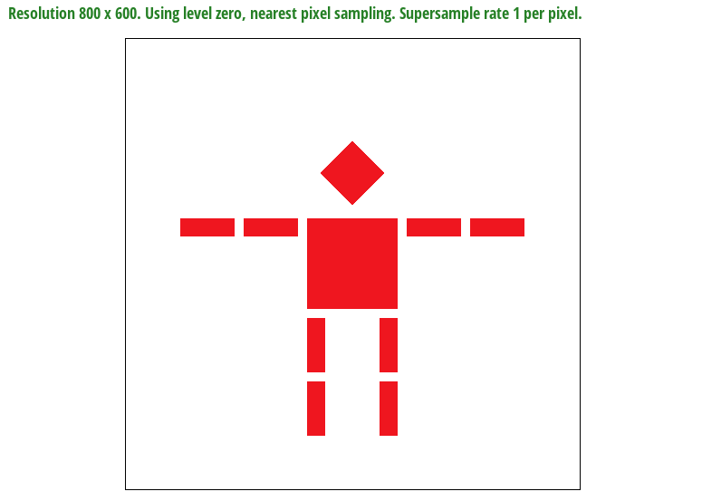
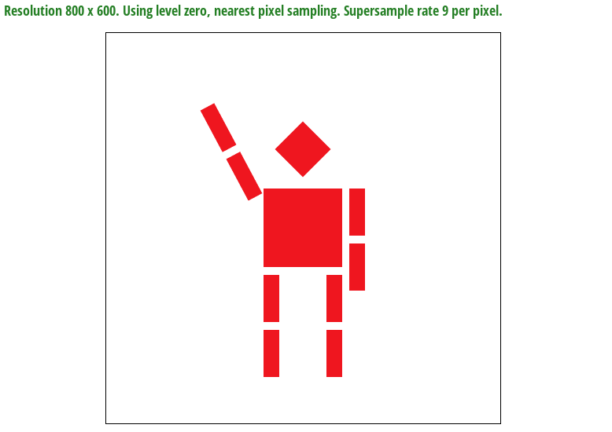
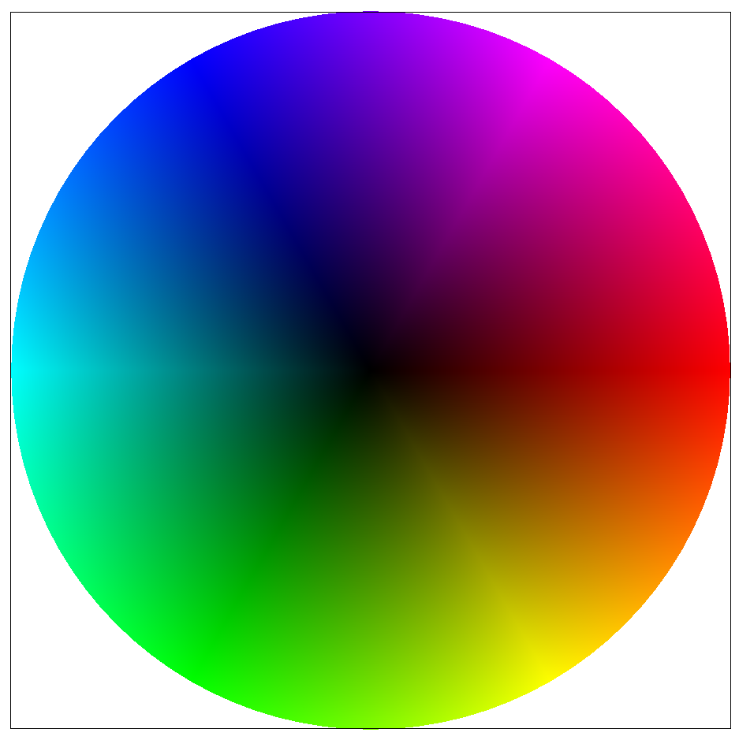

In this Assignment, we cover rasterizing images. In order to do this, we break up the image into triangles, and feed groups of 3 points into the rasterization pipeline. Depending on the desired image, there may or may not be some texture that needs to be mapped to the screen space: if so, there is an associated mapping to from pixel space to texture space. In any case, raw point sampling generally leads to jagged edges and aliasing: our pixel space just isn't high resolution enough to capture all of this detail. There are a number of techniques we can use to combat this. Firstly, we can supersample by taking multiple samples within the region of one pixel, and then taking the average of the values. This is very effective the more samples you have per pixel, but can be very costly. For texture mapping, there are much more efficient ways to implement anti-aliasing. We can implement bilinear interpolation to sample pixel locations in the texture space instead of just returning the color of the nearest pixel. Furthermore, we can utilize a mip-map with decreasing resolutions of the texture: when the step size in texture space is relatively small for a step in the rendering space, we opt for a higher resolution image. When step size in texture space is relatively large, we opt for a lower resolution image to combat potential aliasing. This is a low-cost, effective way to minimize aliasing in texture mapping. Ultimately, we will explore the fundamentals of image rasterization and texture mapping, as well as techniques to reduce aliasing while maintaining efficiency.
For the drawing triangles program, we are given three points. Our task is to figure out which pixels fall within those three points and fill them in with the proper color. There is a very clever way to do so, utilizing vector algebra. Essentially, for each of the bounding lines, we can perform a 90 degrees counter-clockwise rotation to get the vector normal. Then, taking a dot product with this vector encodes a cosine operation (a ⋅ b = |a||b|cos(x)), which is positive over (-π/2, π/2), zero for +/-π/2, and negative for (π/2, 3π/2). This tells us everything we need to know about which side of a line a point is on, and if we do this for all three lines of a triangle we can tell whether or not the point is within the triangle. We execute this as follows: the dot operation for a vector denoted by points (x1, y1) and (x2, y2) is simply (x - x1, y - y1) ⋅ (-(y2 - y1), (x2 - x1)). We perform this operation three times in a row from point A to B, then B to C, then C to A. What we are left with is:
In this diagram, we show that there are two possibilities: all normal vectors could be pointing outwards or inwards. In the outwards case we want all dot products to be negative (or zero), and for the inwards case we want all dot products to be positive (or zero). When these conditions are met, we know the point is inside or on the boundary of a triangle, and we know to fill it in. Now, we can iterative through all points within the bounding box of the triangle, evaluating wether the pixels are in the triangle using this method. It is worth noting that we actually sample at the +0.5 position, meaning point (3, 4) actually corresponds visually to (3.5, 4.5). Essentially, my algorithm is as follows: first, in the rasterize triangle function, I find the minimum and the maximum bounds for the x and y coordinates. Since there are three points, I accomplish this using a chain of min or max such as min(min(A, B), min(B, C)). Then, I set these parameters as the bounds for the for loop. For each point within this 'box', I add an offset of 0.5 to each coordinate and test whether it is in the triangle, outsourcing this process to a helper function which does the dot product procedure as described and returns true if all points are <= 0 or >= 0 and false otherwise. If the point is in the triangle, I call fill pixel on the x and y coordinates with the color provided. Here are the results of the algorithm on a sample svg file:

The essential theory behind supersampling is that we average some number of values per pixel for every pixel on the screen. At a theoretical level, this is an approximation of a convolution, which is the exact average within a given bound for every value. A convolution in theory filters out all high frequencies, stopping all aliasing when filtering at the nyquist frequency. If we supersample some finite number of points within a pixel space, we can approximate this convolution process.
Essentially, my algorithm is as follows: first, I add two nested loops to the existing rasterize triangle with dimension of sqrt(sample_rate). This will iterate through all the values in the pixel, the number of which is specified by the sampling rate. Then, I compute whether the points are inside the triangle in the same manner as before, accounting for a relative offset of 0.5 for each point to capture the value directly in the center of the pixel. The Color value is then recorded in the sample buffer, which store the values with dimension width*height*sample_rate. We get the respective index by considering this to be a width*sqrt(sample rate) by height*sqrt(sample rate) array, and indexing in the same way as before. Now, we don't call 'fill pixel': instead, we manipulate the sample buffer directly and proceed to the next function 'resolve to framebuffer'. Here, we loop through every pixel, and add nested loops for the sample values in each pixel. We keep track of all the RGB values for each color, and then average them at the end. Then, these RGB values get passed into the frame buffer target array, which stores the raw RGB values that actually get drawn to the screen. With this, our supersampling procedure is complete, but we still need to modify our fill pixel function to account for an augmented sample buffer: all values that correspond to a given pixel value must be filled instead of just one sample value. The results of supersampling the same image with different sample rates using this algorithm are shown below.


As observed, the images become proggressively less jagged-edged and visually smoother, especially for sharp angles. At the pixel level, one can observe what is happening: as the sample rate goes up, we obtain a better approximation of the average of all samples within the given pixel, providing a more nuanced rendering per pixel.
For this task, we implemented some basic transformation matrix operations: translate, scale, and rotate. Here are the results on a sample file, robot.svg:
 The first robot image is simply a rendering of the sample robot.svg file provided to us. To make the robot appear waving in the second picture, I implemented a 60 degree rotation of the left arm and a 90 degree rotation of the right arm. Thinking in terms of the rotated frame of refernce, I also had to implement an additional translation to both arms to place them in the correct position relative to the body.
Barycentric Coordinates are an intuitive system of coordinates for triangles! They have many uses which stem from the fact that a point in space is represented as a linear combination of the other 3 points. This means that, for instance, if any transformation of the triangle were to occur such as a scaling, translation, or rotation, barycentric coordinates would preserve the relative positioning. Let's get in to what they are:
Say we have some triangle represented by points ABC. Then, we can represent any coordinates within them as some linear combination of A, B and C: Pxy = ΑA + βB + γC, for Α + β + γ = 1. Now, we can set up independent equations with the x and y coordinates, as well as the normalization equation (Α + β + γ = 1), giving us three equations and three unknowns, which can be solved explicitly. Now that we know how to calculate barycentric coordinates, we can do interesting things with them. One example that illustrates barycentric coordinates is a triangle drawing with endpoints distinctly red, green, and blue, allowing us to visualize the barycentric parameter values with color:
As you can see, the endpoint are fully red, blue, and green, and the points within the triangle are a linear combination of those colors through barycentric interpolation. Another cool example of this effect is the color wheel:
The idea behind pixel sampling for texture mapping is to plot points that exists in texture space onto the screen space through a codified mapping. A texture could be any image or design, and it is in rectangular form. For each three points that define a triangle in x, y screen space, there must also be provided 3 points in u, v texture space. Our challenge is to find a way to get from x, y coordinates to u, v coordinates and properly sample from the u, v space.
In order to do this conversion to u,v space we have the perfect system: barycentric coordinates! Even if the coordinate system is shifted, augmented, or rotated in texture space, barycentric coordinates will still be able to capture the relative positioning! The code implementation is as follows: firstly, we can salvage our code from the rasterize interpolated triangle method to our rasterize textured triangle method. This time we will not be using our barycentric coordinate calculations for color interpolation: instead, we will use the barycentric coordinates of the x, y position relative to the ABC coordinates of the triangle, and apply this to the A'B'C' coordinates of the triangle in texture space. Then, we pass these values into a 'sample parameters' struct which stores all the relavent information for the texture sampling function. For texture pixel sampling we have two options: firstly, we can sample the nearest pixel by rounding off the uv values, or we can perform a billinear interpolation. In a billinear interpolation, we consider the 4 nearest texture samples. Then, we interpolate those sample colors using the function lerp(t, C0, C1) = C0 + t * (C1 - C0) where t is offset from the initial point. We interpolate the colors in groups of two initially, the interpolate in the opposite direction with the resulting colors to complete our interpolation. Then, this color gets returned to the original rasterization function and drawn into the sample buffer. It is worth noting that for generality, uv coordinate values are typically of the domain [0, 1], so we must multiply by width and height respectively to obtain the actual position in the texture space. Below are the results of the algorithm on a sample test file, containing combinations of different pixel sampling methods and supersampling rates.


As you can see, billinear interpolation clearly beats out nearest pixel interpolation for texture mapping at a sampling rate of 1. The lattitude line aliases on the nearest pixel mode, but appears relatively continuous for billinear interpolation. Furthermore, comparing supersampled versions, we see that both are pretty good. However, billinear interpolation has a slight edge in that the longitudal lines appear more continuous in their curves, while the nearest pixel rendering is more jagged.